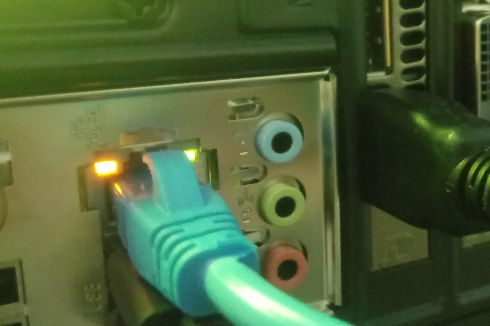

1- Eğer internet ışığınız yanmıyorsa, fiziksel bir temassızlığın meydana gelmiş olma ihtimalini göz önüne almak gerekebilir.Kabloyu çıkartıp tekrar takarak ‘TIK’ sesini duyduğunuzda kablonun yuvaya tam oturduğuna emin olabilirsiniz.

Eğer problem çözülmediyse kablonun değişmesi,Şaft Boşluğunda internet kontrolü gibi işlemler gerekebilir. Bu nedenle bis.lokmanhekim.edu.tr adresinden destek talebi oluşturup
bilgi işlemden yardım isteyiniz.
NOT: Eğer talep oluşturmayı bilmiyorsanız buraya tıklayarak destek talebi oluşturma aşamalarına bakabilirsiniz.